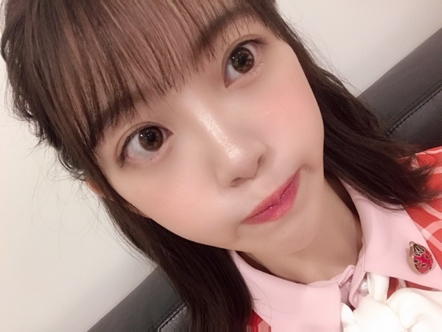
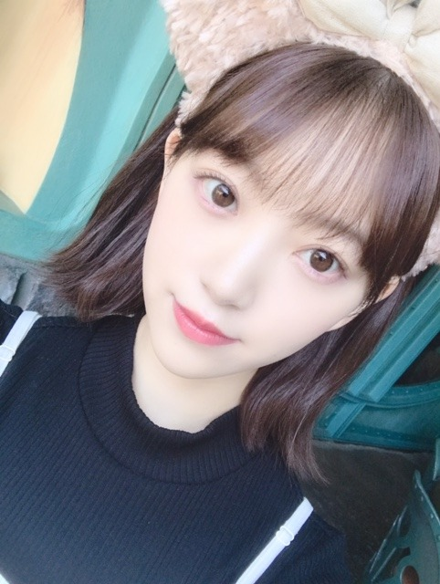

2019/0713Sat辛党になりつつある
こんばんは☺︎
音楽の日、生放送中ですね
既に2曲披露させていただきましたが、まだ出ます
見ててね〜✨✨
楽屋でもみり愛と絢音と横並びになってお菓子を食べながらみり愛が買ってくれたarを読みながら、生放送観てました！楽しい！お菓子美味しい！一袋あけたら食べ切る癖直したい！
歌番組の特番って夏〜って感じしますよね

ポニーテールはまってます！
そういえば、さいきんニキビができまして...
ニキビなのかな？ ぷつっと3つできちゃって...
皮膚科に行く時間ができたら駆け込まなきゃ...

しょんぼりモードです
天気もまだ夏！って感じじゃないし早くカラッと晴れた耳をすませばの雫が図書館に行くときくらいのかんかん照りになってほしいな...
最近感じたこと
私は、やっぱり、自分を周りを信じて前を向き続けなきゃいけない人間だなって改めて思いました
クヨクヨしててもなーんにもうまれないし
むしろダメになっていってる気がするし
うまくいくことが全てじゃなくて 立ち止まって気づけることもたくさんあるなって
強い人は、弱音も希望もはっきり言える人だと思ってます
私なりにぶつかりながら前へ進んでいけたらいいな...
あ！
そうだ、夏の全国ツアーの際に発売されているN46MODEみてくださいましたか？
私はショートパンツ特集で海で撮影をしました☺︎

#彼女の未央奈と海に来た に使ってね！

普段、海か古民家での撮影が多くてそんなイメージなのかな？たしかに海はすき！海鮮美味しいし地球って世界って広いなあって思えるし
大アサリ食べたい
いつか海がきこえるをテーマにしたグラビア撮影とかしてみたいな〜〜

メンバーといる時間、笑ってる時間が何よりも楽しいな〜✨この時間を大事にします！
では☺︎
コメント(326)
暑い日に辛い物を食べて汗を、かくのが好きではありますか、夏が恋しいですね。
昨日、今年初めて蝉の声を聞きましたが、蝉も可哀想です。
音楽の日は、見応えありましたね。
堀さんのポニーテールは、可愛すぎて輝いてましたよ。
淋しい熱帯魚も良かったです。
ニキビは気になりますね、病院に行けると良いです。
誰かの導きがあったとしても、行動するのは堀さん自身ですし、何もしないなら何も産まれないし、後悔だけが残るかな。
結果はすぐにでなくても、その過程は力となり、成長の糧となるはず。
前を向いて下さい。
お菓子ですがそういえば、ホッドキミックでもポテトチップス食べてましたが、スナック菓子も食べるのかな？
少し意外なので書いてみました。
NMODEは買いましたよ。買って良かったです。
念願の撮影が出来ると良いです。
夢の為にも、前を向いて！
頑張って行きましょう！
みおなちゃんはどこかふらふらしてて、自分に自信がない初を演じきれていて役になりきってた。
次々と移り変わるシーンや色彩など、飽きることない時間でした♪
また観たいと思う映画でした。
ありがとう！山戸監督と他キャストの方々にも
歌ってる姿可愛かった✨
NMODE46買ったよ
未央奈ちゃんの自然な表情が魅力的でずっと見てられる✨
京都の握手会で初めて握手して、未央奈ちゃんの事がより好きになれたよ
福岡のライブで会えるのを楽しみにしてるね。
辛いの美味しいよね！
音楽の日見たよ！ポニテ可愛い～
彼女と海来た使いますね笑
後悔しない選択をしていこう！
悩みそして乗り越えること、それが生きることだと思います。
それを体現している未央奈さんはとても尊いです。
ぜひとも自分の信じる道を進んでください。
応援しています。がんばれ！
お菓子を食べる切る癖をやめたい。
これは癖と言うより習慣と言った感じですね。
悪い習慣の事を”スリップ”と言います。
スリップを直すには習慣を”無くす”のではなく”入れ替える”が有効です。
人の行動の５０パーセント位？は習慣によって出来ているので無くすのは難しいです。
なので入れ替えるです。
お菓子を食べきってしまう。
これはそもそも開けなければ良いので開けそうに(悪い習慣をしそうに)なったら、ガムを噛むやスクワットをする等、別の習慣をつくる(入れ替える)と良いです。
ニキビ(肌)に悪い食材。
精製糖(白い砂糖)
GI値が高い食べ物(パン、菓子パン(加工食品)、シリアル、、パスタetc)
ファーストフードや高脂肪食もいけません。
砂糖は駄目ですがフルーツやお米などの糖質は良いです。
ファーストフードや高脂肪食は怠惰なり、精製糖はアルツハイマーの原因だったりメンタルを悪化させたりもします。
アルツハイマーの原因はMIF機能が正常に働いていない事が原因で精製糖はそのMIFの機能を阻害して結果アルツハイマーなります。
なのでメンタル的にも肌的にもアルツハイマーにならない為にも精製糖は止めるのが吉です。
皮膚科に行く前にこれを試してください。
行っても対処療法にしかなりませんし根本を直さないと同じことの繰り返しです。
病院に行くと手間もお金もかかりますし。
クヨクヨ、全く問題なしです。
むしろ良いです。
クヨクヨはネガティブな心理状態ですね。
人はネガティブになっている時には分析力と観察力が上がります。
なぜミスをしたんだろう。
どこが駄目っだったんだろうか。
あそこがこうだったからかな。
じゃあ今度はこうしてみよう。みたいに考えると今まで気が付かなかったことが見えてきます。
感情は道具です。
包丁も上手く使えば美味しい料理を作ってくれますが、自分の手に振り下ろすと痛いし大変な事になりますよね。
それと一緒でネガティブな感情は使いようなんです。
使い方を知らないと後者になります。
誰でも痛いですよね。
こんな感じですね。
音楽の日、見ました。
あと前のブログで千と千尋の神隠しのポスター？の写メありましたね。
高まりました(*'ω'*)
ジブリ良いですよね。
ではこんなところで。
音楽の日お疲れさま！
今日のためにやらなきゃいけないことだらけで、昨日全く見れなかったんだ。。
でも全部録画してあるから見るね！
楽しみだなぁ☺︎
みり愛がar買ってくれたの嬉しいね！
わたしも鼻にめっちゃ大きいニキビできてるの。。
みおちゃんとおそろいだ〜！笑
わたしも早く治したい。笑
NMODE46買わなきゃ！
早くみおちゃん見たい〜！
ライブDVDもホットギミックも乃木坂の映画もそろそろ買ったり見に行けそう☺︎
たくさん乃木活するね❤︎
ムァッサージで回復ぅぅからのお出かけぇぇぇ未央ちゃん行ってきます＼(^o^)／。笑(たまにはゆっくりしろ←)
音楽の日とっても感動しましたよー！！
Sing Out！の衣装姿も可愛いかったし、
インフルエンサーも気合いが入りましたよ♡
淋しい熱帯魚もとても素晴らしかったです！
表情を変えない振りも新鮮だと思いました♡
ポニーテール姿は気が引き締まる感じだし、
楽屋でのプリン会はリラックスなのですね♪
自分も右頬と首にニキビが出て驚きました！
お揃いでちょっと嬉しいけど心配ですね...
梅雨で体にストレスが溜まったのかなー！？
梅雨でも見方次第で楽しくも思えますよね◎
N46MODEではとっても爽やかでしたよー！！
広大な海を見るとリフレッシュしますよね☆
波は絶えず押し寄せたり引いたりしますね～
人も笑ったり泣いたりしてしまいますよ～笑
メンバーが集まると海のようになりますね～
メンバーと一緒に泳ぐのも楽しそうですよ✨
これからやってくる夏にわくわくさんです☺
ブログありがとう！
昨日は、音楽の日を録画して
ホットギミックとドキュメンタリーを
観て来た♪
暫く初ちゃんロスだったから
久しぶりに再会できて嬉しかった♪笑
少し、初ちゃんが強くなっていた気がした！笑笑
ドキュメンタリーは、やっぱり泣けてきたなぁ〜
なんか、重ねた年月を感じたよ。。。
乃木坂も変化していっているんだなぁと
あらためて実感したよ。
新しさと良き伝統が融合していくといいね！
映画の後は、IWAでひとり焼肉〜笑笑
ワシのほうは、あまり体調が良くないけど、
博多に向けて、調整していくつもり。
２日間リザーブシートは贅沢やし、
滅多に体験できんやろから
思いっきり楽しみたいと思う♪
よろしくね♪
去年同様に生誕 Tを着て、JALの307便で向かうよん♪笑
では、
体調管理をしっかりとね！
この時期は、睡眠の確保が必須だよ！！
お互い元気に博多で会おうね☆
わたる⊿
未央奈〜ブログ更新ありがとぉ！
自撮り可愛い
体調に気をつけてお仕事頑張ってね！
8月の横浜個握行くね！！
音楽の日は、録画してます☺
Sing Out!だけ観れたけど、
ポニーテールも可愛くて好き♪
でも、ショートも好きです❤
ニキビ早く治ると良いですね(._.)
音楽の日、僕は見たよ。録画しながら見たよ。インフルエンサーのダンスパフォーマンス、何回見ても、めっちゃかっこいいですね。
Singout!のパフォーマンスも、めっちゃよかったよ。
NMODE46、僕は買ったよ。乃木パン、僕は見たよ。みおなちゃん、めっちゃかわいかったよ。
みおなちゃん、体調に気をつけて仕事頑張ってね。
またコメントするね。
音楽の日観ましたが、インフルエンサー、Sing Out 良かったです。
これからも、応援します。
翡翠とかは？
ブログ更新、ありがとうございます♪
生放送番組の放送中にブログ更新するなんて、斬新ですね‼︎
ファンとしては、臨場感があって嬉しい限り♪
楽屋では、プリン会メンバーでお菓子を食べながら、盛り上がっていたんですね♪
みり愛ちゃんも絢音ちゃんも、『Sing Out!』の選抜メンバーに選ばれて。
こういった歌の特番でも、プリン会のメンバーが揃うようになったのは、嬉しいですね♪
最近は、ポニーテールにハマっているんですね。
自分も、未央奈のポニーテールにハマってます‼︎(笑)
『Sing Out!』では、結構ポニーテールをしてくれていますよね♪
ありがたい…‼︎
自分は『Sing Out!』の未央奈の衣装が結構好きで、さらにポニーテールで清楚感が増すから、鬼に金棒だなって。
思わず目で追ってしまいます(笑)。
未央奈、ニキビができちゃったんですか？
全然分からないけど…
ここに載せてくれている写真も、どれを見ても相変わらずの透明感。
肌が綺麗な人の方が、意外と敏感だったりもするのかな？
あまり気にする必要はないと思うけど、早く皮膚科に行く時間ができるといいですね♪
未央奈、最近ちょっと悩みがちだったのかな？
でも、前を向くことができたようで良かったです♪
やっぱり、クヨクヨしても仕方がないですからね‼︎
未央奈のいる世界は、いろいろと難しいとは思うんですよね。
ショービジネスである以上、周りの声を完全に無視する訳にはいかないし。
かといって、SNSの発達等により多くの様々な意見が飛び交う中で、全てに耳を傾けていたら頭が混乱してしまうし。
いろいろと悩みながらも、最後は自分を信じて、自分で判断するしかない。
初ちゃんのように、悩み苦しみながらも、自我を確立して前に進むしかないんだと思います。
そうやって成長していく堀未央奈を、心から応援してます。
頑張っていきましょう…‼︎
ではでは、また。
明日も未央奈にとっていい1日になりますように♪
もう福岡まで１週間だね！
福岡までには梅雨明けするかな？
最近は福岡で何食べるかめっちゃ調べてます。
とんこつラーメン、明太子、焼鳥、鉄鍋餃子
馬刺、、、など
エメラルドグリーンの物、絞れましたか？
多くありましたが、宝石のエメラルドが浮かび易いかな。
それより、4thアルバムのジャケット写真で堀さんが着ていたドレスがエメラルドグリーンかなと。
そういえば、先日TV番組で石原さとみさんが、毎朝ポンカンを食べてるようです。
堀さんも好きですよぬ。
美女に共通するのかな、となんか嬉しかったです。
桃も出回り始めましたね。
夏よ早く来たれ、ホント心待ちですね。
身体も心も大事にして下さいね。
見守ってますよ、堀さんが大好きですから。
頑張って行きましょう！
音楽の日見てたよ！かわいかった(^_^)
僕的には2部でwinkさんの曲のパフォーマンスがすごく貴重でした！無表情でも逆にかわいいかったです(*^^*)
N46MODE読みました！未央奈ちゃんのショーパンスタイルたまらないですね笑
女性のファッションアイテムでショーパン結構好きなんですよね(*´∀`)♪
そのハッシュタグはもう神すぎます笑
#彼女の未央奈と海に来た
すげえ彼氏いっぱいになっちゃうよwww
チャァオ～～!☆彡
写メのぷっぐり顔がめっちゃ可愛いぃ～～⤴️⤴️・・
みおちゃん、こんにちは～～⤴️⤴️❕❤️❤️❤️❤️❤️笑顔
遅くまで、音楽の日お疲れ様でした～～⤴️⤴️❕❤️❤️❤️❤️❤️笑顔
お身体大丈夫ですかぁ～～❔❤️❤️❤️❤️❤️笑顔
疲れてませんかぁ～～～⤴️⤴️❕❤️❤️❤️❤️❤️笑顔
今日はゆっくり休んでねぇ～～～⤴️⤴️❕❤️❤️❤️❤️❤️笑顔
・・・・・
お菓子ってぇ、美味しいよねぇ～～～⤴️⤴️❕❤️❤️❤️❤️❤️笑顔
おいらも、子供の頃からお菓子の袋を開けたら食べきるタイプでしたけど
ダイエットの為に～～～⤴️⤴️
また、胃腸への油分(脂質の分解)や粘膜への香辛料の刺激の負荷を減らす為に～～～⤴️⤴️・・・
ここ半年は、半分か1／3残すようになりました～～～⤴️⤴️❕❤️❤️❤️❤️❤️笑顔
おかげで2キロ減りました❕笑顔
・・・・
強い人❕❔・・・
んん～～ん❕❔・・・
みおちゃんは～～～⤴️⤴️・・・
強い人はそう見えるの～～⤴️⤴️❔❤️❤️❤️❤️❤️笑顔
そう見えるの～～⤴️⤴️❔❤️❤️❤️❤️❤️笑顔
ふふぅぅ～～ん❕❔❤️❤️❤️❤️❤️
決してぇ～～⤴️⤴️
そうではないと思うけどなぁ～❕❔❤️❤️❤️❤️❤️笑顔
最初に、なんて説明すればいいかなぁ～～⤴️⤴️❕❔・・
ただ言える事は～～～⤴️⤴️
周りの人(会社やお客様)から信頼され続ける為に～～❕・・・
またその過程でミスをしない為に
大抵どんな事があってもぉ
冷静に落ち着いてぇ～～⤴️⤴️・・
お客様の意見や会社の人の意見を
「素直に」耳を傾けて、最善の方法で仕事を進めていくことだと思っているよぉ❕❤️❤️❤️❤️❤️笑顔
解決する為に、ただ・ただ仕事に集中して
わたし事の事も(弱音を)、考えずに～⤴️⤴️
仕事に集中しているだけです❕笑顔
わたし事の弱音を考えていたら～～⤴️⤴️
仕事が、どこかで必ず失敗します❕笑顔
たくさん見てますし、自分自身もやりました❕❤️❤️❤️❤️❤️笑顔
ですから、弱音を「考えない」「吐かない」だけです❕笑顔
このお話しで、みおちゃんにわかって頂けると
大変嬉しい～です❕❤️❤️❤️❤️❤️笑顔
それでは、可愛いぃ～～～⤴️⤴️
みおちゃん、またねぇ～～⤴️⤴️❕❤️❤️❤️❤️❤️笑顔
☆大人しい、おすまし！より☆彡
どうも、The・辛党の翔んで9メートルだよ。
良いですよ、辛党の世界はディープですからねぇ～
やっぱり未央奈は可愛い！
一目見ただけで唐辛子食べたときほど、身体が熱くなってくる。
うん、未央奈。最高！
その通りだと思いますよ。
いいねえ！
雨の日にrainは染みますね～✨
エメラルドグリーンはティファニーですよ！
あとは常磐線とか沼とか入浴剤とかかな～♪
エメラルドグリーンの温泉も良いですねー！
お風呂にゆっくり入ってリラックスしたい☆
みおちゃんと静かな海にも行ってみたいな～
きっと海鮮をいっぱい食べるんだろうな♡笑
お菓子を食べ過ぎてもニキビが出ますよ～☺
今日は選抜発表ですね
未央奈ちゃんのことだから
きっといい位置にいると思うけど
出来ればセンターだと嬉しいな
ドキドキワクワクしながら
工事中観ますね
最近悩んでる…
女子なのに女の子しか興味ないのはおかしいって言われた…
まぁ、乃木坂が可愛すぎるだけか
みおなは可愛いから大丈夫
彼女とデートなう❤️
こんな彼女いたら自慢するしめっちゃ愛でるww
夢だねみおなみたいな彼女とか
いーね海‼️
行きたーい‼️
大好き‼️
好き好き好き好き！
告白したらいーよもらった‼️
彼女できたぁ❗️（女の子ですよー❗️）
これからも頑張って‼️
ずーっと好き‼️
音楽の日、観ましたよ！
Sing Out！とインフルエンサーはもちろん素晴らしかったですし、淋しい熱帯魚の、飛鳥ちゃんとのコンビがのパフォーマンスがとても良かったです！！
リハでは笑ってしまったと言ってましたが、本番は表情もとても良かったです！
プリン会で仲良くお菓子を食べながら観ていたのですか！
とても微笑ましいです！
お菓子を開けたら食べきってしまうというのは、とても気持ちがわかります！笑
僕の場合、そもそも家にあると食べちゃうので、基本お菓子は買わないようにしています笑笑
とても素敵な考え方ですね。
僕は弱音も希望も隠しちゃって言えないことが多く、つくづく弱い男だなと思ってしまいます。
自分なりにぶつかりながらも前に進んでいく、それはとてもかっこいいと思いますし、僕もそうなれるようにもっと頑張らなきゃなと思いました。
素敵な写真をたくさんありがとうございます！
NMODE46をまだ観られていないので、チェックしなければですね。
未央奈ちゃんがブログで綴る言葉、とても素敵だなと改めて思いました。
これからもブログを楽しみにしています！
未央奈ちゃん、大好きです
私もウルサイくらいに蝉が鳴く暑い夏が大好きなので、耳を澄ませばをはじめジブリ映画の夏の雰囲気は、いつ何度見ても良いですね。梅雨明けが待ちどおしいです。
私から見える未央奈さんは、ご自身が「これだ！」と思ったことに関しては妥協せずに努力を惜しまず、突き進む感じ。演技を拝見していると、本当に今まで色々なドラマや映画を見て、表情や体の動き等、細かな点まで勉強されているな、と感じます。
陰で努力をして、大変そうな表情を表に出したりしないけれど、やっぱり色々考えることがあるんですよね。
でもメンバーと戯れたり、笑いあっている状況を思い浮かべると、とても微笑ましいです。
ファンとして出来ることは数限りですが、いつも応援しています！
自分の歳になると、肌はカサカサで単なる吹き出物になってしまいます。
でも、ひどくならない様にケアはした方が良いですね☆
しかし、ニキビも未央奈に出てくるなんて、羨ましいにきびだな。
ホットギミックは、僕が、普段見ないジャンルなので、新感覚でした。堀ちゃんの演技が凄くて、見入ってしまいました。
堀ちゃんのこと尊敬しています。
ドキュメンタリー映画は、色々と思うことがありました。うまく言えなけど、乃木坂46は、とても奥が深いグループだなと、思いました。これからも、乃木坂46応援し続けたいなと思います。ずっとずっと見守り続けます。これからも、よろしくお願いします。他のメンバーにも、伝えて頂けたら、幸いです。
とても作品を、見させて頂きました。ありがとうございます。
また、握手会等で、お会いしましょう、ずっと大好きです。
メンバーや好きな人と笑っていられる時って
良いよね～(*^^*)
そんな時間を大事にしてね～(^-^ゞ
音楽の日お疲れ様でした
海に行ったら
楽しそうだな～
写真使わせてもらいます！！
今、タピオカ流行ってるらしいの、だから
けっこうな甘党だよね！
テレビで辛い料理食べる企画やったりしてるじゃん、それけっこう辛いのが好きじゃないと無理だよね。
ブログありがとう！
昨日は、音楽の日を録画して
ホットギミックとドキュメンタリーを
観て来た♪
暫く初ちゃんロスだったから
久しぶりに再会できて嬉しかった♪笑
少し、初ちゃんが強くなっていた気がした！笑笑
ドキュメンタリーは、やっぱり泣けてきたなぁ〜
なんか、重ねた年月を感じたよ。。。
乃木坂も変化していっているんだなぁと
あらためて実感したよ。
新しさと良き伝統が融合していくといいね！
映画の後は、IWAでひとり焼肉〜笑笑
ワシのほうは、あまり体調が良くないけど、
博多に向けて、調整していくつもり。
２日間リザーブシートは贅沢やし、
滅多に体験できんやろから
思いっきり楽しみたいと思う♪
よろしくね♪
去年同様に生誕 Tを着て、JALの307便で向かうよん♪笑
では、
体調管理をしっかりとね！
この時期は、睡眠の確保が必須だよ！！
お互い元気に博多で会おうね☆
わたる⊿
可愛い
ニキビはストレスかダニによるものらしいよ
音楽の日、未央奈がたくさんカメラで抜かれとって可愛いかった
未央奈のボブもいいけど、ポニーテールもめちゃくちゃ可愛い❤❤ぷく顔未央奈の写真も欲しいな…
それじゃあまたの…！
こんばんは
24hフロントおめでとう❗
頑張ってね。
今日もお疲れ様です
仕事で疲れて帰ってきて、気付いたら寝てて起きたら朝というパターンが多くて、最近コメントしてなくてすみません（やっと落ち着いた）
まずは、キャプテンが卒業発表しましたね
俺は堀ちゃんが好きだけど、それでも全員かけがけのない存在だから、誰が卒業しても寂しくなりますよ
出会いと別れを繰り返して人は強くなっていくのでこれからも応援してます
残りのキャプテンとの時間を大切にして下さい
音楽の日は録画で観ました
堀ちゃん可愛かったです
sing out！やインフルエンサーは、口ずさみたくなる曲です
この時期と年末は乃木坂がたくさん歌番組出るので嬉しいです
明日は休みだから、乃木坂ドキュメンタリー映画を観に行く予定です（感想はまた今度）
もう一つ選抜フロントおめでとう！
4期の子達を飛鳥と両脇から支えて頑張って下さい
今日はここら辺で（またコメントするね）
ありがとうございました
いっぱい食べさせたいーーーー!!!!
ほーりーのゴリゴリ進んでいく感じが好きです
表現あってるかわかんないけど
堀り進め!!!
次はセンター返り咲きや!!


、、今日は、、雨だね〜
、、ビキニ、、（笑）じゃない、、ニキビに、、ついて、、悩んでいるんだね〜
、、野菜を、、多く食べて、、睡眠を、、タップリとれば、、大丈夫だね〜
、、海にも、、誰かと、一緒に、、（笑）行けるよ〜
、、じゃあ、、またね〜